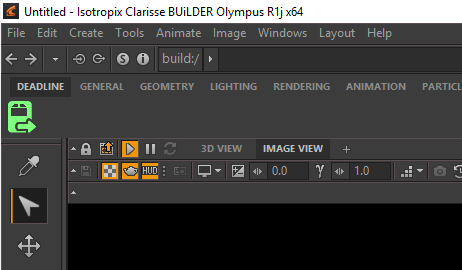
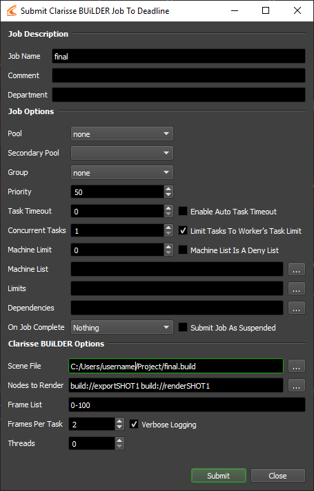
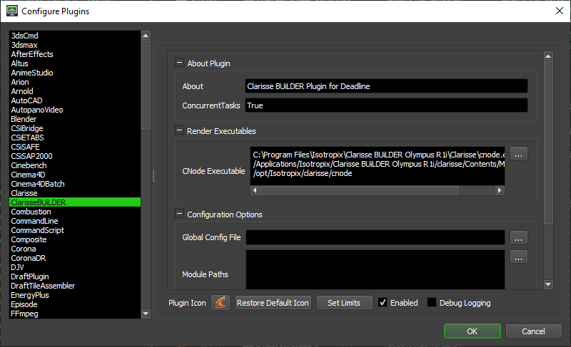

Clarisse BUiLDER¶
Job Submission¶
Clarisse BUiLDER jobs can be submitted through the integrated submitter, or from Deadline Monitor. Before continuing, please follow the appropriate setup instructions:
To submit from within Clarisse BUiLDER, click on the “Submit to Deadline” icon.
The submitter will come up with the Frame List, Scene File and Job Name fields already populated.
To select which nodes to render, select them by clicking the ellipsis or enter their node paths in the “Nodes to Render” field.
Note
Only ProcessVariableRange nodes which override the F (frames) value are supported. This is to allow Deadline to parallelize rendering frames.
Submission Options¶
The general Deadline options are explained in the Job Submission documentation. The Clarisse BUiLDER specific options are:
Threads: The number of threads to use for rendering. If set to 0, the value in the Clarisse BUiLDER configuration file will be used.
Verbose Logging: Enables verbose logging during rendering.
Plugin Configuration¶
You can configure the Clarisse BUiLDER plugin settings from the Monitor. While in power user mode, select Tools -> Configure Plugins and select the Clarisse BUiLDER plugin from the list on the left.
Note, if the executable supports a MAJOR.MINOR.REVISION (9.0.123) numbering system in its path, then you will need to configure the explicit exe path to the particular revision that you have installed on your machines. Deadline does not track every possible revision available or indeed where it might be custom installed to, so a studio should verify their exe paths are correct for each application version they choose to use with Deadline. Multiple exe paths can still be declared and the first one that is found on a particular Worker on a particular platform will be used from the exe list.
Configuration Options
Global Config File: A global configuration file to be used for rendering. If left blank, the Clarisse.cfg file in the user home directory will be used instead.
Module Paths: Additional paths to search for modules (one path per line).
Search Paths: Additional paths to search for includes (one path per line).
Integrated Submission Script Setup¶
The following procedures describe how to install the integrated Clarisse BUiLDER submission script. This script allows for submitting Clarisse BUiLDER render jobs to Deadline directly from within the Clarisse BUiLDER editing GUI.
You can either run the Submitter installer or manually install the submission script.
Submitter Installer¶
Run the Submitter Installer located at
<Repository>/submission/ClarisseBUiLDER/Installers.
Manual Installation¶
Copy the script DeadlineClarisseBUiLDERClient.py from
[Repository]\submission\ClarisseBUiLDER\Clientto your local machine. The submitter installer copies the script to:%localappdata%\Thinkbox\Deadline[VERSION]\submitters\ClarisseBUiLDERSubmitter (where [VERSION] is the major version of Deadline)
In Clarisse BUiLDER, right-click on the toolbar at the top and select Add Item.
In the Add New Item dialog, set the following properties:
Title: Submit To Deadline
Category: Custom
Category Custom: Deadline
- Script Path: Choose the
DeadlineClarisseBUiLDERClient.pyscript that you copied to your local machine. You can also set the
Submit to Deadlineicon, which is found in the same folder asDeadlineClarisseBUiLDERClient.py
- Script Path: Choose the
Click Add, and you should now see a Deadline tab in the toolbar with a button that you can click on to submit the job.
Error Messages and Meanings¶
This is a collection of known Clarisse BUiLDER error messages and their meanings, as well as possible solutions. We want to keep this list as up to date as possible, so if you run into an error message that isn’t listed here, please visit the Thinkbox Help Centre and let us know.
Currently, no error messages have been reported for this plugin.

{kind=link}
{kind=link}
{kind=link}
{kind=link}
{kind=link}